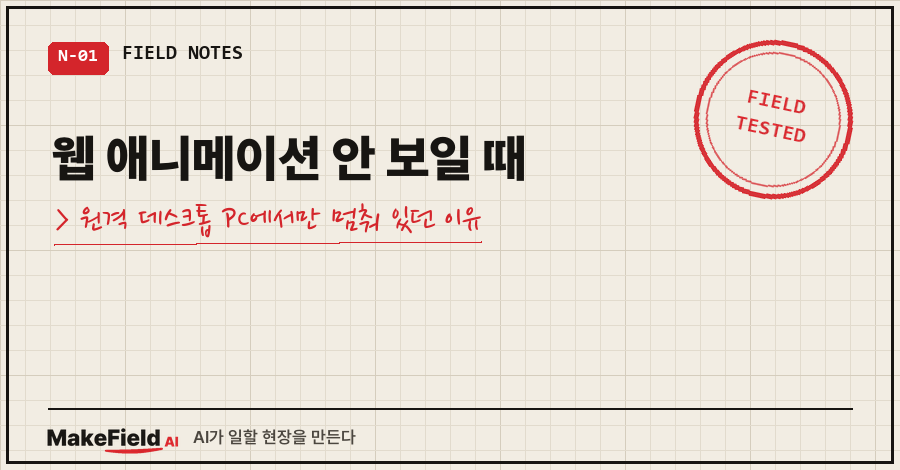
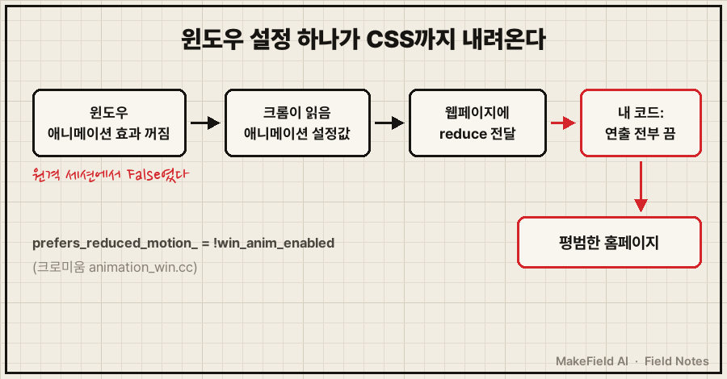
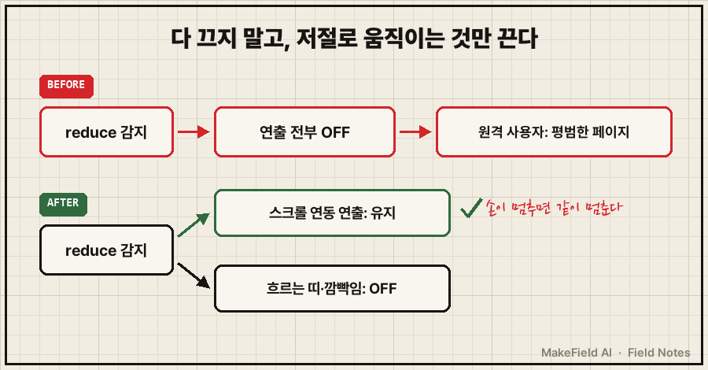
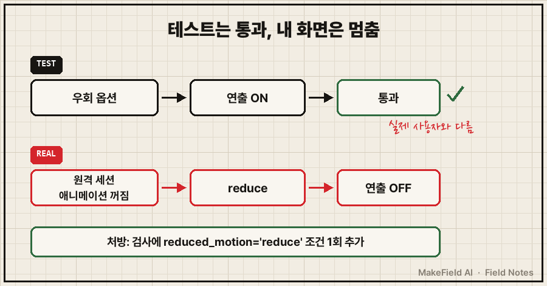

웹 애니메이션 안 보일 때, 그것도 내 PC에서만 안 보일 때 이야기예요.
AI랑 스크롤하면 움직이는 홈페이지를 만들어 올렸는데, 정작 제 모니터에서는 그냥 평범한 홈페이지로 보였어요.
테스트는 데스크톱·모바일 둘 다 통과한 상태였고요.
원인은 한 줄로 정리돼요. 윈도우에서 '애니메이션 효과'가 꺼져 있으면 크롬은 웹페이지에 prefers-reduced-motion: reduce(움직임 줄이기)를 알리고, 이 신호를 받으면 연출을 통째로 끄도록 짠 코드는 아무것도 안 움직입니다. 제 PC는 원격 데스크톱 세션에서 이 값이 꺼져 있었어요(2026년 10월 4일 실측, 윈도우 + 크롬).
15년 넘게 현장 설비를 만져 온 엔지니어인데, 웹은 전공이 아니라서 화면 코드는 거의 AI한테 맡겨 만들었어요. 그래서 "AI가 친절하게 넣어 둔 기본값"이 저를 막을 줄은 몰랐습니다.
1. 증상: 테스트는 통과, 내 화면만 멈춤
상황부터 적을게요.
스크롤에 맞춰 화면이 기울고 다가가는 3D 연출을 넣었어요.
배포 전에 자동 렌더 검사를 돌렸고요.
가로 1440 데스크톱, 가로 390 모바일 둘 다 정상.
페이지 오류 0건.
그런데 제 PC로 열면 연출이 하나도 없었어요.
스크롤을 내려도 글과 그림만 순서대로 지나가는 정적인 페이지..
"내 PC에서만"이라는 게 힌트였어요. 그날 제 PC 상태를 찍어 보니 이랬습니다.
SESSIONNAME=RDP-Tcp
ClientAreaAnimation=False첫 줄은 원격 데스크톱(RDP)으로 접속한 세션이라는 뜻이고, 둘째 줄은 윈도우의 '창 안 애니메이션' 설정이 꺼져 있다는 뜻이에요. 저는 평소 다른 자리에서 원격 데스크톱으로 이 PC에 붙어서 일하거든요.
2. 원인: 윈도우 설정이 크롬을 거쳐 CSS까지 내려와요

prefers-reduced-motion은 사용자가 운영체제에서 "움직임을 줄여 달라"고 설정했는지를 웹페이지가 알 수 있게 해 주는 CSS 미디어 조건이에요. 멀미나 어지럼을 느끼는 사람을 위한 접근성 장치죠.
크롬이 윈도우에서 이 값을 정하는 코드는 공개돼 있어요(크로미움 소스 animation_win.cc).
BOOL win_anim_enabled = true;
has_reduced_motion_platform_parameter_.emplace(::SystemParametersInfo(
SPI_GETCLIENTAREAANIMATION, 0, &win_anim_enabled, 0));
prefers_reduced_motion_ = !win_anim_enabled;윈도우 애니메이션이 꺼져 있으면 → 크롬은 "움직임 줄이기 원함"으로 본다. 그게 전부예요.
윈도우 설정 위치는 MDN 문서 기준으로 이렇습니다.
| 윈도우 버전 | 설정 경로 |
|---|---|
| 윈도우 10 | 설정 > 접근성(Ease of Access) > 디스플레이 > Windows에 애니메이션 표시 |
| 윈도우 11 | 설정 > 접근성 > 시각 효과 > 애니메이션 효과 |
한 가지는 솔직히 적어 둘게요. 제 PC가 원격 세션에서 이 값이 꺼져 있었던 건 실측이지만, 원격 데스크톱이 항상 이 값을 끈다는 공식 근거는 못 찾았어요. 그래서 "원격이라서"라고 단정하기보다 값을 직접 확인하는 게 맞습니다. 확인법은 4번에 적어 뒀어요.
3. 해결: 다 끄지 말고, 저절로 움직이는 것만 끄기
처음 코드는 reduce가 감지되면 연출 전체를 끄는 구조였어요. AI 입장에선 접근성을 챙긴 안전한 선택이었죠.

고를 수 있는 길은 셋이었어요.
- reduce면 전부 끄기 — 가장 안전하지만, 저처럼 원격으로 일하는 사람에겐 사이트 절반이 사라져요
- reduce 무시하기 — 연출은 다 보이지만, 정말 움직임이 불편한 사람의 설정을 짓밟는 거라 제외
- 스크롤에 붙은 연출은 유지, 저절로 움직이는 것만 끄기 — 이걸 골랐어요
3번을 고른 이유는 간단해요. 스크롤 연출은 사용자가 손을 움직일 때만 따라 움직이고, 멈추면 같이 멈춰요. 반면 혼자 흐르는 띠나 깜빡이는 안내선은 사용자가 아무것도 안 해도 계속 움직이죠. 실제 배포된 코드 주석과 줄이 이래요.
// 움직임 줄이기(Windows 애니메이션 끔·원격 데스크톱 포함)여도 스크롤 연출은 유지 — 사용자가 스크롤할 때만 움직이므로.
// 저절로 움직이는 것(흐르는 띠, 안내선 깜빡임)만 끈다. ?static 이면 정적 페이지.
var reduce = window.matchMedia && window.matchMedia('(prefers-reduced-motion: reduce)').matches;
// 흐르는 띠: reduce면 자동 이동 속도 0, 스크롤로 준 힘(vel)만 남김
tx -= (reduce ? 0 : 1.1) + vel;이게 정답이라고는 못 해요. 웹 접근성 기준(WCAG 2.3.3, 가장 높은 AAA 등급)은 상호작용으로 생기는 움직임도 끌 수 있게 하라고 권하거든요. 그래서 주소 뒤에 ?static을 붙이면 완전 정적 페이지로 보는 길은 남겨 뒀어요.
4. 테스트가 못 잡은 이유, 그리고 확인 순서
진짜 문제는 사실 여기였어요.
자동 테스트를 연출이 켜지는 우회 옵션으로만 돌렸던 거예요. reduce 조건은 한 번도 안 본 거죠. 테스트 환경이 실제 사용자 조건과 다르면, 통과는 아무 의미가 없더라고요.

그 뒤로 검사 스크립트에는 이 한 줄이 들어갔어요(Playwright 파이썬).
g = b.new_page(viewport=vp, reduced_motion='reduce')웹 애니메이션이 내 PC에서만 안 보일 때 제가 이제 보는 순서예요.
| 순서 | 확인할 것 | 방법 |
|---|---|---|
| 1 | 브라우저가 reduce를 받고 있나 | 개발자도구 콘솔에 matchMedia('(prefers-reduced-motion: reduce)').matches → true면 범인 후보 |
| 2 | 윈도우 애니메이션이 꺼져 있나 | 위 표의 설정 경로, 또는 아래 PowerShell |
| 3 | 원격 세션인가 | PowerShell에서 $env:SESSIONNAME (RDP-Tcp면 원격) |
| 4 | 코드가 reduce일 때 뭘 끄나 | prefers-reduced-motion 검색 → 전부 끄는지, 자율 모션만 끄는지 |
2번을 PowerShell로 보는 방법이에요. 결과가 False면 꺼진 상태입니다.
$sig = '[DllImport("user32.dll")] public static extern bool SystemParametersInfo(uint a, uint b, ref bool c, uint d);'
$t = Add-Type -MemberDefinition $sig -Name SPI -Namespace W -PassThru
$v = $false
[void]$t::SystemParametersInfo(0x1042, 0, [ref]$v, 0) # 0x1042 = SPI_GETCLIENTAREAANIMATION
"ClientAreaAnimation=$v"자주 묻는 질문
Q. 내 PC 설정만 켜면 끝나는 거 아닌가요?
내 화면은 그걸로 해결돼요. 하지만 방문자 중에도 애니메이션을 꺼 둔 사람, 원격으로 접속한 사람이 있어요. 그분들 화면에선 여전히 멈춰 있으니, 고칠 곳은 내 설정이 아니라 코드였어요.
Q. 원격 데스크톱이 아닌 PC에서 이 상황을 재현하려면요?
크롬 개발자도구의 Rendering 탭에서 prefers-reduced-motion을 reduce로 흉내 낼 수 있어요. 자동 검사라면 위 Playwright 옵션 한 줄이면 됩니다.
AI가 짜 준 코드는 대체로 '안전한 쪽'으로 기울어요. 그 안전이 누구 기준인지는 제 사용 환경을 아는 사람만 따질 수 있더라고요. 원격 데스크톱 쪽에서 막혔던 다른 일은 원격 데스크톱 연결 안 됨, 계정이 하루 38번 잠기던 글에 있어요.
웹 전공 아닌 사람이 AI랑 무언가 만들다 걸린 지점들은 makefield.ai에서 이어서 보실 수 있어요.
출처
- Chromium 소스
ui/gfx/animation/animation_win.cc(Animation::UpdatePrefersReducedMotion) → https://chromium.googlesource.com/chromium/src.git/+/HEAD/ui/gfx/animation/animation_win.cc (2026-10-15 확인) - W3C WCAG 2.2, 2.3.3 Animation from Interactions (AAA) → https://www.w3.org/WAI/WCAG22/Understanding/animation-from-interactions
- MDN, prefers-reduced-motion (윈도우 10·11 설정 경로) → https://developer.mozilla.org/en-US/docs/Web/CSS/@media/prefers-reduced-motion (2026-10-15 확인)
- 증상·실측값·코드: 2026-10-04 개인 홈페이지 작업 기록(주소·저장소 정보 제외)
태그: #웹애니메이션안보임 #애니메이션안될때 #prefersreducedmotion #움직임줄이기 #원격데스크톱 #RDP #윈도우애니메이션효과 #크롬애니메이션 #CSS애니메이션 #GSAP #ScrollTrigger #Playwright #웹접근성 #AI코딩 #MakeFieldAI